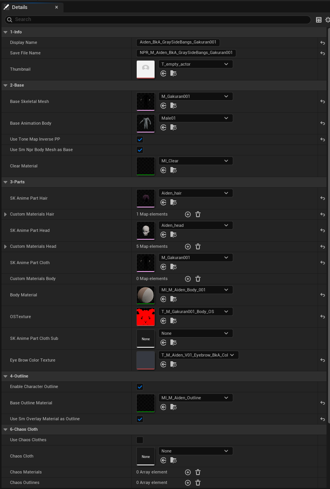
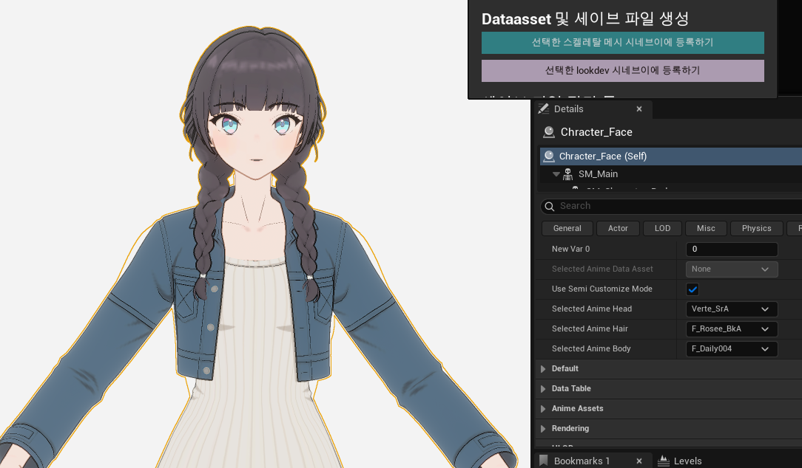
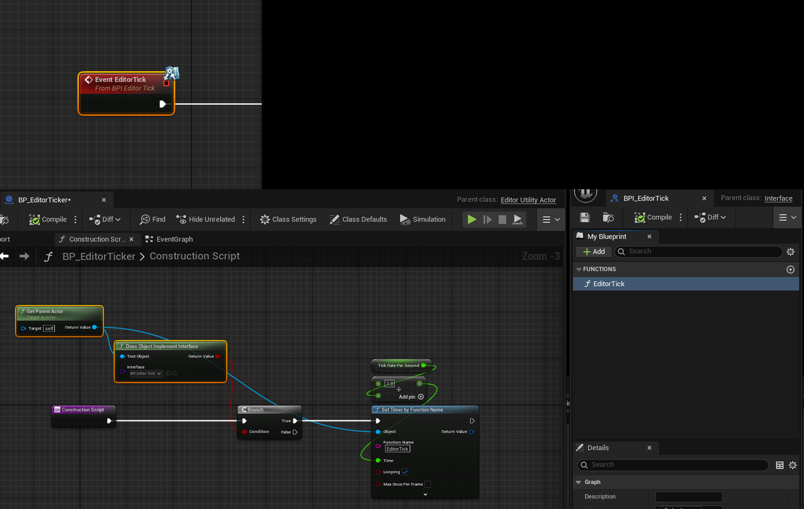
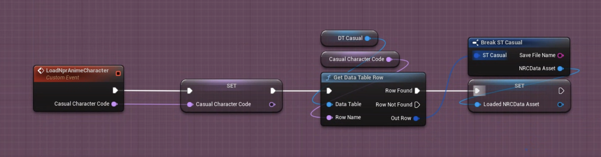
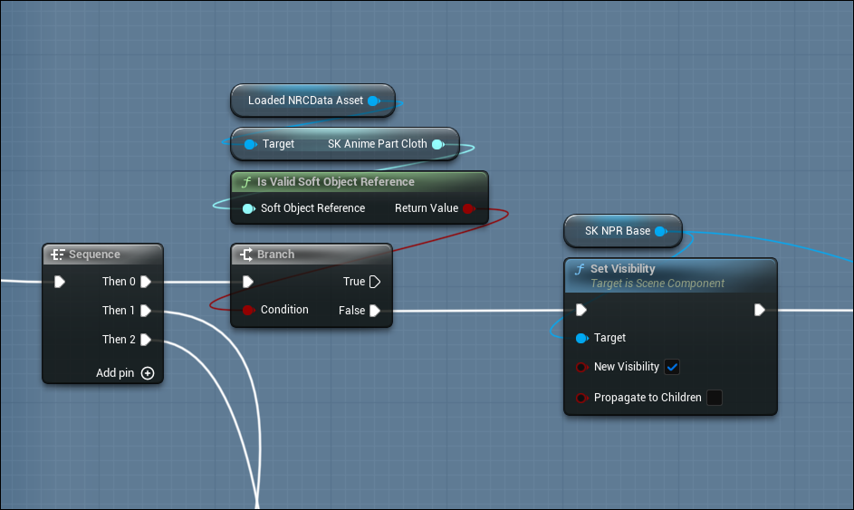

Character System
300+ characters from a single Blueprint
UE5 · C++ · Blueprint — Company, 2024–2026
Problem
As the character count approached 300, we needed a pipeline to systematically manage parts assembly, registration, preview, and loading. Opening the editor pulled in all assets via hard references, requiring a 30-second wait. Checking colors or animations meant launching the game every time. With external VRM support added, manually setting up cameras and thumbnails per model became yet another burden.
Solution
I proposed a VRM save/load prototype using vrm4u early on, which was adopted and is now running in production. I split the work into three systems: an Editor tool, a Runtime character Blueprint, and VRM Reference Points. Each loads Data Assets or external models and lets you verify them against the in-house shader and animations. Artists assemble parts and register presets in the editor, producing Data Assets that the runtime loads asynchronously.

NRC Data Asset — managing parts, materials, outline, and Chaos Cloth settings in one place

Editor preview — checking NPR characters on background without launching the game
Result
| Category | Before | After | Improvement |
|---|---|---|---|
| Editor Load | 30s | 6s | 80%↓ |
| Packaged Load | Several seconds | Perceived 0s | Eliminated |
| Character Presets | - | 300+ | Unified |
System Structure
Three separate codebases, connected through Data Assets and VRM info nodes. The editor tool produces Data Assets. The runtime Blueprint loads them async. VRM Reference Points handles external model info.
[1] NPR Character Manager (C++ Plugin)
└─ BP_Character_EnvCheck ─── Editor (for artists)
├─ Parts assembly (Head/Hair/Body)
├─ Preset save → Data Asset production
└─ Editor Tick → Preview without PIE
Data Asset ─────┐
▼
[2] BP_Basemodel_TF ─────────── Runtime (inherits CinevCharacter)
├─ Internal: Data Asset → Per-part async load
└─ External: VRM loader → Whole-model load
▲
│ VRM info node update
│
[3] VRM Reference Points ──── VRM4U Plugin (C++)
├─ 4-level fallback face detection (crown/eyes/mouth/nose)
└─ Camera target + automatic thumbnail captureEditor — Character Environment Checker
Artists assemble head, hair, and body parts in the editor and save them as presets. The Editor Tick Interface allows verifying characters and animations on a background without launching the game. The runtime reads these Data Assets directly.


Editor Tick — preview without PIE
Runtime — Character Blueprint
A separate codebase from the editor tool -- a runtime character Blueprint inheriting the base character class. Internal characters load parts asynchronously from editor-produced Data Assets (Head/Hair/Body split), while external VRM loads the entire model through a loader. The same Blueprint handles both, branching only at the load path.


Unified / split skeletal mesh load branching
External Model Support — VRM Reference Points
A C++ module written for the VRM4U plugin that updates VRM info nodes in the runtime character Blueprint. It auto-detects the face position of any external VRM/PMX via a 4-level fallback, then uses the result as a camera target to automatically capture 3-angle thumbnails (face close-up, upper body, full body). A commandlet environment enables batch thumbnail generation for all characters without opening the editor. A-pose/T-pose detection is also automatic.
Auto face detection running on an external VRM

3-angle auto-captured thumbnails

In-house + external VRM character lineup